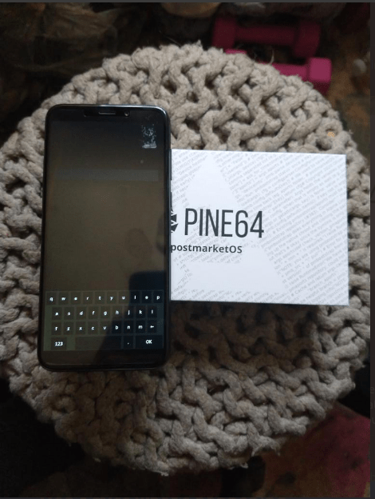

your number one source for linux phone news
~ ~ ~ News | Operating Systems | Software | Devices | Contact Us | About Us ~ ~ ~
I have been away for a short time due to working on some side projects and visiting with family, so I believe we are past due for an update on some Linux Phone news here at FOSSphones!
What has been going on in the world of mobile Linux lately? Well, quite a bit, as a matter of fact. Why don't we take a look?
The major big piece of Pinephone news for those of you who don't have your own PinePhone just yet is the exciting fact that the Manjaro Community Edition PinePhone will open up for pre-order on the Pine Store on September 17, which is tomorrow! Learn more about this edition of the Pinephone here.
I am very happy to annouce that I received my PinePhone PostmarketOS Community Edition on September 8th. I have been using it as my daily driver recently, and I plan to give a video tour of it soon for people who may be on the fence about purchasing a PinePhone of their own.
I also have my PinePhone Braveheart Edition that I leave at home for tinkering and development work. I might even make an update on some projects I have been working on.
The PineTab tablet, Pine64's own Linux tablet, began shipping early adopter units as well. These tablets shipped with Ubuntu Touch preinstalled, but there are also other software distributions for PineTab that can currently be tested out, including Arch Linux ARM and Mobian. If you have or are expecting a PineTab, feel free to test these releases out and let us know how they function in the comments.
I sadly missed the boat on the early adopter edition of the PineTab, but will definitely be picking one or two up on the next batch.
That is it for some of the latest and greatest news for now! I should try to be back in my weekly posting schedule starting this week, so expect to see plenty more Linux phone news, along with some Pinephone videos, very soon here on FOSSphones.